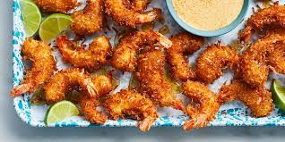

Air Fryer Coconut Shrimp

Description
simple spicy honey-lime dip.
Ingredients
- ½ cup all-purpose flour and 1 ½ teaspoons ground black pepper
- 2 large eggs and ⅔ cup unsweetened flaked coconut
- ⅓ cup panko bread crumbs and 12 ounces uncooked medium shrimp, peeled and deveined
Steps
- Stir together flour and pepper in shallow dish. Lightly beat eggs in a second shallow dish. Stir together coconut and panko in a third shallow dish. Hold each shrimp by the tail, dredge in flour mixture, and shake off excess. Then dip floured shrimp in egg, and allow any excess to drip off. Finally, dredge in coconut mixture, pressing to adhere. Place on a plate. Coat shrimp well with cooking spray.
- Preheat air fryer to 400 degrees F (200 degrees C). Place 1/2 the shrimp in the air fryer and cook about 3 minutes. Turn shrimp over and continue cooking until golden, about 3 minutes more. Season with 1/4 teaspoon salt. Repeat with remaining shrimp.Preheat air fryer to 400 degrees F (200 degrees C). Place 1/2 the shrimp in the air fryer and cook about 3 minutes. Turn shrimp over and continue cooking until golden, about 3 minutes more. Season with 1/4 teaspoon salt. Repeat with remaining shrimp.